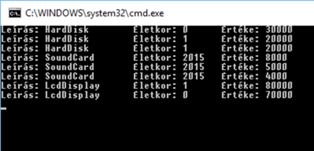

1. A modell és a kód kapcsolata¶
Utolsó módosítás ideje: 2022.10.15
Kidolgozta: Benedek Zoltán
A gyakorlat célja¶
A gyakorlat célja:
- Ismerkedés a hallgatókkal/gyakorlatvezetővel
- A gyakorlatokra vonatkozó követelmények pontosítása
- Elindulás Visual Studio-val és .NET alkalmazások fejlesztésével.
- Egy egyszerű Hello World .NET alkalmazás elkészítése, C# alapok
- Az UML és a kód kapcsolatának szemléltetése
- Az interfész és az absztrakt ősosztály alkalmazástechnikája
Gyakorlatvezetőknek
A hallgatók korábbi tanulmányaik során C++ gyakorlaton már használták a Visual Studio környezet, így a cél jelen esetben az ismeretek felelevenítése és életünk első C# alkalmazásának elkészítése. Ugyanakkor előfordulhat, hogy a hallgatók nem emlékeznek pontosan a Visual Studio használatára, így a feladatok megoldása során ezeket folyamatosan elevenítsük fel (pl. Solution Explorer, F5-futtatás, breakpoint használat, stb.)
Előfeltételek¶
A gyakorlat elvégzéséhez szükséges eszközök:
- Visual Studio 2022
Visual Studio-ból a legfrissebb verziót célszerű feltenni. A Community Edition, Professional és az Enterprise verzió is megfelel. A Community Edition ingyenes, letölthető a Microsoft honlapjáról. A Professional fizetős, de az egyetem hallgatói számára ez is ingyenesen elérhető (https://azureforeducation.microsoft.com/devtools honlapon, az Azure Dev Tools for Teaching program keretében).
Visual Studio Class Diagram támogatás
Jelen gyakorlat bizonyos feladatainál (és az első házi feladat esetében is) a Visual Studio Class Designer támogatását használjuk. A Visual Studio nem teszi fel minden esetben a Class Designer komponenst a telepítés során. Ha nem lehet Class Diagram-ot felvenni a Visual Studio projektbe (mert a Class Diagram nem szerepel a listában az Add New Item parancs során megjelenő ablak listájában – erről a jelen útmutató későbbi fejezetében bővebben), akkor a Class Diagram komponenst utólag kell telepíteni:
- Visual Studio telepítő indítása (pl. a Windows Start menüben a „Visual Studio Installer” begépelésével).
- A megjelenő ablakban „Individual components” fül kiválasztása
-
A keresőmezőbe „class designer” begépelése, majd győződjünk meg, hogy a szűrt listában a „Class Designer” elem ki van pipálva.

Amit érdemes átnézned:
- A gyakorlathoz nem kapcsolódik a tárgyból előadás. Ugyanakkor a gyakorlat épít az UML alapismeretekre, illetve az UML osztálydiagram és a kód egymásra történő leképezésének alapjaira.
Gyakorlat menete¶
A gyakorlatvezető a gyakorlat elején összefoglalja a gyakorlatokra vonatkozó követelményeket: • A tárgyi adatlapon ezek többsége megtalálható • Az otthoni feladatokról információ a tárgy honlapján található.
Visual Studio fejlesztőeszközzel, .NET alkalmazásokat fogunk készíteni C# nyelven. A C# hasonlít a Java-hoz, fokozatosan ismerjük meg a különbségeket. A gyakorlat vezetett, gyakorlatvezető instrukciói alapján együtt kerülnek elvégzésre a feladatok.
1. Feladat - „Hello world” .NET konzol alkalmazás elkészítése¶
A feladat egy olyan C# nyelvű konzol alkalmazás elkészítése, amely a konzolra kiírja a „Hello world!” szöveget. Az alkalmazást C# nyelven készítjük el. A lefordított alkalmazás futtatását a .NET runtime végzi. A fordítás/futtatás elméleti hátterét, valamint a .NET alapjait az első előadás ismerteti.
A solution és azon belüli projekt létrehozásának lépései Visual Studio 2022 esetén:
- Új projekt varázsló elindítása, melyre két mód is van
- Indítóablak segítségével
- Indítsuk el a Visual Studio-t
- A megjelenő indítóablak jobb oldali sávjában „Create new project”
- Már futó Visual Studio-ban
- File/New-Project
- Indítóablak segítségével
-
A Create new project varázslóban a „Console app” (és NEM a „Console app (.NET Framework)” sablont válasszuk ki, ebből is a C#-osat. Azt, hogy C#-os, a sablon ikonjának bal felső sarka jelzi. Ha nem látjuk a listában, rá kell keresni/szűrni. Rákereshetünk a felső keresősávban a „console” beírásával. Vagy az alatta levő lenyíló mezők segítségével: az elsőben (nyelvkiválasztó) „C#”, a harmadikban (projekttípus kiválasztó) „Console”.
 3. Next gomb az varázslóablak alján, a következő varázslóoldalon:
3. Next gomb az varázslóablak alján, a következő varázslóoldalon:- Project name: Hello World
- Location: a laborokban a c:\work\
mappába dolgozzunk, ehhez van írási jogunk. - Solution name: Hello World (elvileg ez be is lesz írva, mire ideérünk)
- Place solution and project in the same directory: nincs pipa (de nincs különösebb jelentősége).
-
Next gomb az varázslóablak alján, a következő varázslóoldalon:
- Framework: .NET 6 (Long-term support).
- A "Do not use top level statements" jelölőnégyzetet pipáljuk be (ennek magyarázatára mindjárt visszatérünk).
A projekttel egy új solution is létrejön, mely struktúrája a Visual Studio Solution Explorer ablakában tekinthető át. Egy solution több projectből állhat, egy project pedig több fájlból. A solution a teljes munkakörnyezetet fogja össze (egy .sln kiterjesztésű fájl tartozik hozzá), míg egy projekt kimenete egy .exe vagy .dll fájl jellemzően, vagyis egy összetett alkalmazás/rendszer egy komponensét állítja elő. A projektfájlok kiterjesztése C# alkalmazások esetén .csproj.
A Program.cs fájlunk tartalma a következő:
using System.Text;
namespace HelloWorld
{
class Program
{
static void Main(string[] args)
{
Console.WriteLine("Hello World!");
}
}
}
Vegyünk fel egy Console.ReadKey() sort:
using System.Text;
namespace HelloWorld
{
class Program
{
static void Main(string[] args)
{
Console.WriteLine("Hello World!");
Console.ReadKey();
}
}
}
- Futtassuk az alkalmazást (pl. az F5 billentyű használatával). A kód felépítése nagyon hasonlít a Java-hoz, illetve a C++-hoz. Az osztályaink névterekbe szervezettek. Névtereket hatókörbe „hozni” a using kulcsszóval tudjuk. Névteret definiálni a namespace kulcsszóval tudunk.
- Egy konzolos C# alkalmazásban az alkalmazásunk belépési pontját egy statikus Main nevű függvény megírásával adjuk meg. Az osztályunk neve bármi lehet, a VS egy
Programnevű osztályt generált esetünkben. AMainfüggvény paraméterlistája kötött: vagy ne adjunk meg paramétereket, vagy egystring[]-öt adjunk meg, amiben futás közben megkapjuk az parancssori argumentumokat. - .NET-ben a standard ki és bemenet kezelésére a System névtér
Consoleosztálya használandó. AWriteLinestatikus műveletével egy sort tudunk kiírni, aReadKeyművelettel egy billentyű lenyomására várakozhatunk.
Top level statements és Implicit usings
A projekt létrehozásakor korábban bepipáltuk a "Do not use top level statements" jelölőnégyzetet. Ha ezt nem tettük volna meg, akkor a Program.cs fájlunkban mindössze egyetlen érdemi sort találtunk volna:
// See https://aka.ms/new-console-template for more information
Console.WriteLine("Hello World!");
- Top level statements. Ennek az a lényege, hogy mindenféle osztály/Main és egyéb függvénydefiníció nélkül a projektben egyetlen forrásfájlban közvetlenül is írhatunk kódot. Ez esetben ezt a színfalak mögött a fordító berakja egy általunk nem látható osztály statikus Main függvényébe. A bevezetésének a motivációja az volt, hogy a nagyon egyszerű, „script” szerű alkalmazások esetén kevesebb legyen a boilerplate kód.
- Implicit global usings. Annak függvényében, hogy pontosan milyen projekttípust hoztunk létre, bizonyos alapnévterek a színfalak mögött automatikusan using-olva lesznek minden forrásfájlban (ehhez a compiler a „global using” utasítást használja). A lényeg: a fejlesztőknek így bizonyos, gyakran használt névtereket (pl. System.IO, System.Collections.Generic stb.) nem kell a forrásfájlonként using-olni.
Inconsistent visibility vagy inconsistent accessibility hiba
A félév során a programozási feladatok megvalósítása során találkozhatunk „inconsistent visibility”-re vagy „inconsistent accessibility”-re panaszkodó fordítási hibaüzenetekkel. A jelenség hátterében az áll, hogy .NET környezetben lehetőség van az egyes típusok (osztály, interfész, stb.) láthatóságának szabályozására:
internalvagy nem adjuk meg a láthatóságot: a típus csak az adott szerelvényen (.exe, .dll)/projekten, belül láthatópublic: a típus más szerelvények/projektek számára is látható
A hiba legegyszerűbben úgy hárítható el, ha minden típusunkat publikusnak definiáljuk, pl.:
public class HardDisk
{ … }
Elméleti áttekintés¶
Az alfejezetek nem tartalmaznak feladatot, a hallgatók számára ismertetik a kapcsolódó elméleti témaköröket, példákkal illusztrálva.
A) Az UML osztálydiagram és a kód kapcsolatának elmélete [hallgató]*¶
Az anyag itt elérhető: Az UML osztálydiagram és a kód kapcsolata. Ez a témakör korábbi félévben a Szoftvertechnológia tárgy keretében került ismertetésre.
B) Interfész és absztrakt (ős)osztály [hallgató]*¶
Az anyag itt elérhető: Interfész és absztrakt (ős)osztály.
Témakörök:
- Absztrakt osztály fogalma és definiálása C# nyelven
- Interfész fogalma és definiálása C# nyel
- Absztrakt ős és interfész összehasonlítása
2. Feladat - Az UML és a kód kapcsolatának szemléltetése¶
Feladat: Egy számítógépalkatrész nyilvántartó alkalmazás kifejlesztésével bíztak meg bennünket. Bővebben:
- Különböző típusú alkatrészeket kell tudni kezelni. Kezdetben a
HardDisk,SoundCardésLedDisplaytípusokat kell támogatni, de a rendszer legyen könnyen bővíthető új típusokkal. - Az alkatrészekhez tartozó adatok: beszerzés éve, életkora (számított), beszerzési ára és aktuális ára (számított), de ezeken felül típusfüggő adatokat is tartalmazhatnak (pl. a
HardDiskesetében a kapacitás). - Az aktuális ár függ az alkatrész típusától, a beszerzési ártól és az alkatrész gyártási évétől. Pl. minél öregebb egy alkatrész, annál nagyobb kedvezményt adunk rá, de a kedvezmény mértéke függ az alkatrész típustól is.
- Listázni kell tudni a készleten levő alkatrészeket.
- A
LedDisplayosztálynak kötelezően egyDisplayBaseosztályból kell származnia, és aDisplayBaseosztály forráskódja nem megváltoztatható. Jelen példában ennek nincs sok értelme, a gyakorlatban azonban gyakran találkozunk hasonló helyzettel, amikor is az általunk használt keretrendszer/platform előírja, hogy adott esetben egy-egy beépített osztályból kell származtassunk. Tipikusan ez a helyzet, amikor ablakokkal, űrlapokkal, saját vezérlőtípusokkal dolgozunk: ezeket a keretrendszer beépített osztályaiból kell származtatnunk, és a keretrendszer - pl. Java, .NET - forráskódja nem áll rendelkezésünkre (de legalábbis biztosan nem akarjuk megváltoztatni). A példánkban aDisplayBase-ből való származtatás előírásával ezt a helyzetet szimuláljuk.
A megvalósítás során jelentős egyszerűsítéssel élünk: az alkatrészeket csak memóriában tarjuk nyilván, a listázás is a lehető legegyszerűbb, egyszerűen csak kiírjuk a nyilvántartott alkatrészek adatait a konzolra.
A kezdeti egyeztetések során a megrendelőnktől a következő információt kapjuk: egy belső munkatársuk már elindult a fejlesztéssel, de idő hiányában csak félkész megoldásig jutott. A feladatunk részét képezi a félkész megoldás megismerése, illetve ebből kiindulva kell a feladatot megvalósítani.
Nyissuk meg a megrendelőnktől kapott forráskód solution-jét (EquipmentPélda – Kiindulás mappa) Visual Studio alatt (EquipmentInventory.sln). A Solution Explorerben szemmel fussuk át a fájlokat. Az megértést segítené, ha egy osztálydiagramon megjelenítenénk az osztályok közötti kapcsolatokat. Vegyünk is fel egy osztálydiagramot a projektünkbe. A Solution Explorerben a projekten (és nem a solution-ön!) jobb gombbal kattintva a felugró menüben az Add/New Item … elemet választva, majd a megjelenő ablakban a Class Diagram elemet válasszuk ki, az ablak alján a diagram nevének a Main.cd-t adjuk meg, és OK-zuk le az ablakot.
Note
Megjegyzés: ha a Class Diagram elem nem jelenik meg a listában, akkor nincs telepítve a VS megfelelő komponense. Erről jelen dokumentum Előfeltételek fejezetében olvashatsz bővebben.
Ekkor a Solution Explorerben megjelenik a Main.cd diagramfájl, duplakattintással nyissuk meg. A diagramunk jelenleg üres. A Solution Explorerből drag&drop-pal dobjuk rá a .cs forrásfájlokat a diagramra. Ekkor a VS megnézi, milyen osztályok vannak ezekben a forrásfájlokban, és visszafejti őket UML osztályokká. Alakítsuk ki a következő ábrának megfelelő elrendezést (az osztályok tagjainak megjelenítését a téglalapuk jobb felső sarkában levő duplanyílra kattintással érhetjük el):

Az osztályokhoz tartozó forráskódot is megnézhetjük, akár a diagramon a megfelelő osztályra duplán kattintva, akár a Solution Explorerből a .cs fájlokat megnyitva. A következőket tapasztaljuk:
- A
SoundCard,HardDiskésLedDisplayosztályok viszonylag jól kidolgozottak, rendelkeznek a szükséges attribútumokkal és lekérdező függvényekkel. - Az
LedDisplaya követelményeknek megfelelően aDisplayBaseosztályból származik. - Az
EquipmentInventoryfelelős ugyan a készleten levő alkatrészek nyilvántartásáért, de gyakorlatilag semmi nincs ebből megvalósítva. - Találunk egy
IEquipmentinterfészt,GetAgeésGetPriceműveletekkel
Álljunk neki a megoldás kidolgozásának. Először is az alapkoncepciókat fektessük le. Az EquipmentInventory osztályban egy heterogén kollekcióban tároljuk a különböző alkatrész típusokat. Ez a kulcsa az alkatrészek egységes kezelésének, vagyis annak, hogy a megoldásunk új alkatrésztípusokkal könnyen bővíthető legyen.
Mint korábban taglaltuk, az egységes kezelést vagy közös ősosztály, vagy közös interfész bevezetésével lehet megoldani. Esetünkben a közös ősosztály (pl. EquipmentBase) úgy tűnik, kiesik, mert ennek bevezetésével az LedDisplay osztálynak két ősosztálya is lenne: a kötelezőnek kikötött DisplayBase, és az általunk az egységes kezelésre bevezetett EquipmentBase. Ez nem lehetséges, .NET környezetben egy osztálynak csak egy őse lehet. Az a megoldás pedig, hogy a DisplayBase-t úgy módosítjuk, hogy ő is az EquipmentBase-ből származik, a követelményünknek megfelelően nem lehetséges (kikötés volt, hogy a forráskódja nem módosítható). Marad tehát az interfész alapú megközelítés. Minden bizonnyal az alkalmazás korábbi fejlesztője is erre a következtetésre jutott, ezért is vezette be az IEquipment interfészt.
Vegyünk fel egy IEquipment típusú elemekből álló generikus listát (ne property-t hanem field-et!) az EquipmentInventory osztályba. A láthatósága – az egységbezárásra törekedve – legyen private. A neve legyen equipment (ne legyen „s” a végén, angolban az equipment többes száma is equipment). A tagváltozó felvételéhez a Visual Studio Class Details ablakát használjuk. Ha az ablak nem látható, a View/Other Windows/Class Details menü kiválasztásával jeleníthető meg.

A tagváltozó típusa tehát List<IEquipment>. A .NET List típusa egy dinamikusan nyújtózkodó generikus tömb (mint Java-ban az ArrayList).
A diagramon az EquipmentInventory osztályra pillantva azt látjuk, hogy csak a tagváltozó neve jelenik meg, a típusa nem. A diagram hátterén jobb gombbal kattintva a Change Members Format menüből a Display Full Signature-t válasszuk ki. Ezt követően a diagramon láthatóvá válik a tagváltozók típusa, valamint a műveletek teljes szignatúrája.

Az EquipmentInventory osztályon duplán kattintva elnavigálhatunk a forráskódba, és mint látható, valóban egy lista típusú tagváltozóként jelenik meg a kódban:
class EquipmentInventory
{
private List<IEquipment> equipment;
Ennek egyrészt örülünk, mert a Visual Studio támogatja a round-trip engineering technikát: a modellt érintő változásokat azonnal átvezeti a kódba, és viszont. Másrészt a korábbiakban azt taglaltuk, hogy ha egy osztályban egy gyűjtemény tag van egy másik osztály elemeiből, akkor annak az UML modellben egy 1-több típusú asszociációs kapcsolatként „illik” megjelennie a két osztály között. A modellünkben egyelőre nem ezt tapasztaljuk. Szerencsére a VS modellező felülete rávehető, hogy ilyen formában jelenítse meg ezt a kapcsolattípust. Ehhez kattintsunk a diagramon jobb gombbal az equipment tagváltozón, és a menüből válasszuk ki a Show as Collection Association elemet. Az IEquipment osztályt ezt követően mozgassuk ki jobbra, hogy kellő hely legyen a diagramon az asszociációs kapcsolat és a kapcsolaton levő szerep (role) adatainak megjelenítésére:

A dupla nyíl végződés a „többes” oldalon nem szabványos UML, de ne szomorodjunk el tőle különösebben, nincs semmi jelentősége. Annak mindenképpen örülünk, hogy a kapcsolatot reprezentáló nyíl az IEquipment végén a szerepben a tagváltozó neve (sőt, még a pontos típusa is) fel van tüntetve.
Navigáljunk el az EquipmentInventory forráskódjához, és írjuk meg a konstruktorát, ami inicializálja az equipment gyűjteményt!
public EquipmentInventory()
{
equipment = new List<IEquipment>();
}
Ezután írjuk meg a ListAll metódust, ami kiírja az elemek életkorát, és az aktuális értéküket:
public void ListAll()
{
foreach (IEquipment eq in equipment)
{
Console.WriteLine($"Életkor: {eq.GetAge()}\tÉrtéke: {eq.GetPrice()}");
}
}
Az elemeken a foreach utasítással iterálunk végig. A foreach utasítás használata során az in kulcsszó után egy gyűjteménynek kell állnia, az in előtt pedig egy változó deklarációnak (esetünkben IEquipment eq), ahol a típus a gyűjtemény elemtípusa. Minden iterációban ez a változó a gyűjtemény iterációbeli értékét veszi fel.
A Console.WriteLine műveletnek vagy egy egyszerű stringet adunk meg, vagy, mint esetünkben, egy formázási stringet. A behelyettesítéseket string interpolációval oldottuk meg: a behelyettesítendő értékeket {} között kell megadni. Ha string interpolációt használunk, a stringnek $ jellel kell kezdődnie.
Írjunk meg egy AddEquipment nevű függvényt, ami felvesz egy új eszközt a készletbe:
public void AddEquipment(IEquipment eq)
{
equipment.Add(eq);
}
Korábbi döntésünk értelmében az IEquipment interfészt használjuk az különböző alkatrész típusok egységes kezelésére. Estünkben mind a SoundCard, mind a HardDisk osztály rendelkezik GetAge() és GetPrice() metódussal, mégsem tudjuk őket egységesen kezelni (pl. közös listában tárolni). Ahhoz, hogy ezt meg tudjuk tenni, el kell érnünk, hogy mindkét osztály megvalósítsa az IEquipment interfészt. Módosítsuk a forrásukat:
public class SoundCard : IEquipment
{
...
public class HardDisk : IEquipment
{
...
Ezt követően a SoundCard és HardDisk osztályban implementálnunk kell az IEquipment interfészben levő metódusokat. Azt tapasztaljuk, hogy ezzel nincs most teendők, a GetPrice és GetAge függvények már meg vannak írva mindkét helyen.
Próbaképpen a Program.cs fájlban található Main függvényünkben hozzunk létre egy EquipmentInventory objektumot, töltsük fel HardDisk és SoundCard objektumokkal, majd listázzuk a késztelet a konzolra. Ammennyiben nem 2021 az aktuális év, az alábbi soroknál a 2021-es évet írjuk át az aktuális évre, a 2020-at pedig ennél eggyel kisebb számra!
static void Main( string[] args )
{
EquipmentInventory ei = new EquipmentInventory();
ei.AddEquipment(new HardDisk(2021, 30000, 80));
ei.AddEquipment(new HardDisk(2020, 25000, 120));
ei.AddEquipment(new HardDisk(2020, 25000, 250));
ei.AddEquipment(new SoundCard(2021, 8000));
ei.AddEquipment(new SoundCard(2020, 7000));
ei.AddEquipment(new SoundCard(2020, 6000));
ei.ListAll();
Console.ReadKey();
}
Az alkalmazást futtatva azt tapasztaljuk, hogy bár megoldásunk kezdetleges, de működik:

Folytassuk a munkát a LedDisplay osztállyal. A DisplayBase ős forráskódját a követelmények miatt nem módosíthatjuk. De ez semmiféle problémát nem okoz, a LedDisplay osztályunk fogja az IEquipment interfészt implementálni, módosítsuk a kódot ennek megfelelően:
public class LedDisplay : DisplayBase, IEquipment
A LedDisplay osztályban már meg kell írni az interfészben szereplő függvényeket:
public double GetPrice()
{
return this.price;
}
public int GetAge()
{
return DateTime.Today.Year - this.manufacturingYear;
}
Bővítsük a Main függvényünket is, vegyünk fel két LedDisplay objektumot a készletünkbe (itt is él, hogy ammennyiben nem 2021 az aktuális év, az alábbi soroknál a 2021-es évet írjuk át az aktuális évre, a 2020-at pedig ennél eggyel kisebb számra!
ei.AddEquipment( new LedDisplay( 2020, 80000, 17, 16) );
ei.AddEquipment( new LedDisplay ( 2021, 70000, 17, 12) );
ei.ListAll();
Console.ReadKey();
Tesztelésképpen futtassuk az alkalmazást.
3. Feladat - Az interfész és az absztrakt ősosztály alkalmazástechnikája¶
Értékeljük a jelenlegi, interfész alapú megoldásunkat.
Az egyik fő probléma, hogy kódunk tele van a karbantarthatóságot és bővíthetőséget romboló kódduplikációval:
- A
yearOfCreationésnewPricetagok minden alkatrész típusban (kivéve a speciálisLedDisplay-t) közösek, ezeket új típus bevezetésekor is copy-paste technikával át kell venni. - A
GetAgefüggvény implementációja szinten minden alkatrész típusban (kivéve a speciálisLedDisplay-t) azonos, szintén copy-paste-tel „szaporítandó”. - A konstruktorok
yearOfCreationésnewPricetagokat inicializáló sorai szintén duplikáltak az egyes osztályokban.
Bár ez a kódduplikáció egyelőre nem tűnik jelentősnek, új alkatrész típusok bevezetésével egyre inkább elmérgesedik a helyzet, jobb időben elejét venni a jövőbeli fájdalmaknak.
A másik probléma abból adódik, hogy az alkatrész adatok listázása jelenleg fájdalmasan hiányos, nem jelenik meg az alkatrész típusa (csak a kora és az ára). A típus megjelenítéséhez az IEquipment interfészt bővíteni kell, pl. egy GetDescription nevű művelet bevezetésével. Vegyünk is fel egy GetDescription függvényt az interfészbe!
public interface IEquipment
{
double GetPrice();
int GetAge();
string GetDescription();
}
Ekkor minden IEquipment interfészt implementáló osztályban meg kellene valósítani ezt a metódust is, ami sok osztály esetén sok munka (valamint egy többkomponensű, vagyis több DLL-ből álló alkalmazás esetében, amikor ezek nem egy fejlesztő cég kezében vannak, sokszor nem is megoldható). A build parancs futtatásával ellenőrizzük, hogy a GetDescription felvétele után három helyen is fordítási hibát kapunk.
Interfészben alapértelmezett implementáció megadása
Érdemes tudni, hogy C# 8-tól (illetve .NET vagy .NET Core runtime is kell hozzá, .NET Framework alatt nem támogatott) kezdve interfész műveleteknek is lehet alapértelmezett implementációt adni (default interface methods), így a fenti probléma megoldásához nincs szükség absztrakt osztályra, de interfésznek továbbiakban sem lehet tagváltozója. Bővebben információ itt: default interface methods.
public interface IEquipment
{
double GetPrice();
int GetAge();
string GetDescription() { return "EquipmentBase"; }
}
Mindkét problémára megoldást jelent egy közös absztrakt ős bevezetése (kivéve az LedDiplay osztályt, amire még visszatérünk). Ebbe fel tudjuk költöztetni a leszármazottakra közös kódot, valamint az újonnan bevezetett GetDescription művelethez egy alapértelmezett implementációt tudunk megadni. Legyen az új absztrakt ősosztályunk neve EquipmentBase. Kérdés, szükség van-e a továbbiakban az IEquipment interfészre, vagy az teljesen kiváltható az új EquipmentBase osztállyal. Az IEquipment interfészt meg kell tartsuk, mert a LedDisplay osztályunkat nem tudjuk az EquipmentBase-ből származtatni: már van egy kötelezően előírt ősosztálya, a DisplayBase: emiatt az EquipmentInventory a továbbfejlesztett megoldásunkban is IEquipment interfészként hivatkozik az különböző alkatrészekre.
Álljunk is neki az átalakításnak. Legyen az osztálydiagramunk az aktív tabfül. A Toolbox-ból drag&drop-pal dobjunk fel egy Abstract Class elemet a diagramra, a neve legyen EquipmentBase.

A következőkben azt kell elérjük, hogy a SoundCard és a HardDisk osztályok származzanak az EquipmentBase-ből (a LedDisplay-nek már van másik őse, így ott ezt nem tudjuk megtenni). Ehhez válasszuk ki az Inheritance kapcsolatot a Toolbox-ban, majd húzzunk egy-egy vonalat a gyermekosztályból kiindulva az ősosztályba a SoundCard és HardDisk esetében egyaránt.
A következő lépésben alakítsuk át úgy a kódot, hogy ne a HardDisk és SoundCard valósítsák meg külön-külön az IEquipment interfészt, hanem a közös ősük, az EquipmentBase egyszer. Ehhez módosítsuk az EquipmentBase osztályt úgy, hogy valósítsa meg az interfészt (akár a diagramon húzzunk be egy inheritance kapcsolatot az EquipmentBase-ből az IEquipment-be, vagy az EquipmentBase forráskódját módosítsuk). A HardDisk és SoundCard osztályokból töröljük az IEquipment megvalósítását (az ős már implementálja).
A diagramunk és a forráskódunk vonatkozó részei ezt követően így néznek ki:

public abstract class EquipmentBase : IEquipment
{
}
public class HardDisk : EquipmentBase
{ …
public class SoundCard : EquipmentBase
{ …
A kódunk még nem fordul, ennek több oka is van. Az EquipmentBase implementálja az IEquipment interfészt, de még nincsenek benne implementálva az interfész műveletei. Vagy generáltassuk le a metódusokat a smart tag használatával, vagy gépeljük be a következő elveknek megfelelően:
- A
newPriceésearOfCreationduplikálva vannak aHardDiskésSoundCardosztályokban: mozgassuk (és ne másoljuk!) át ezeket a közös EquipmentBase ősbe, és protected láthatóságot adjunk meg. - A
GetAgeművelet duplikálva van aHardDiskésSoundCardosztályokban, ezekből töröljük ki az implementációt és vigyük át azEquipmentBaseosztályba. - A
GetPriceműveletet absztrakt műveletként vegyük fel az ősbe. Ez szándékos tervezői döntés, így rákényszerítjük a leszármazott osztályokat, hogy mindenképpen definiálják felül ezt a műveletet. - A
GetDescriptionesetében viszont pont fordítottja a helyzet: ezt virtuálisnak definiáljuk (és nem absztraktnak), vagyis már az ősben is adunk meg implementációt. Így a leszármazottak nincsenek rákényszerítve a művelet felüldefiniálására.
A fentieknek megfelelő kód a következő:
public abstract class EquipmentBase : IEquipment
{
protected int yearOfCreation;
protected int newPrice;
public int GetAge()
{
return DateTime.Today.Year - yearOfCreation;
}
public abstract double GetPrice();
public virtual string GetDescription()
{
return "EquipmentBase";
}
}
Néhány kiegészítő gondolat a kódrészletre vonatkozóan:
- Az absztrakt osztályok esetében az abstract kulcsszót ki kell írni a class szó elé.
- Az absztrakt műveletek esetében az abstract kulcsszót kell megadni
- .NET környezetben lehetőségünk van szabályozni, hogy egy művelet virtuális-e vagy sem. Ebből a szempontból a C++ nyelvhez hasonlít. Amennyiben egy műveletet virtuálissá szeretnénk tenni, a virtual kulcsszót kell a műveletre megadni. Emlékeztető: akkor definiáljunk egy műveletet virtuálisnak, ha a leszármazottak azt felüldefiniál(hat)ják. Csak ekkor garantált, hogy egy ősreferencián meghívva az adott műveletet a leszármazottbeli verzió hívódik meg.
A következő lépésben térjünk át az EquipmentBase leszármazottakra. C# nyelven az absztrakt és virtuális műveletek felüldefiniálásakor a leszármazottban meg kell adni az override kulcsszót. Első lépésben a GetPrice műveletet definiáljuk felül:
public class HardDisk : EquipmentBase
{
…
public override double GetPrice()
{
return yearOfCreation < (DateTime.Today.Year - 4) ? 0 :
newPrice - (DateTime.Today.Year - yearOfCreation) * 5000;
}
}
public class SoundCard : EquipmentBase
{
…
public override double GetPrice()
{
return yearOfCreation < (DateTime.Today.Year - 4) ? 0 :
newPrice - (DateTime.Today.Year - yearOfCreation) * 2000;
}
}
A következőkben lépésben a GetDescription műveletet írjuk meg a HardDisk és SoundCard osztályokban. Mivel itt az ősbeli virtuális függvényt definiáljuk felül, szintén meg kell adni az override kulcsszót:
public class HardDisk : EquipmentBase
{
…
public override string GetDescription()
{
return "HardDisk";
}
}
public class SoundCard : EquipmentBase
{
…
public override string GetDescription()
{
return "SoundCard";
}
}
Felmerülhet bennünk a kérdés, miért döntöttek úgy a C# nyelv tervezői, hogy a műveletek felüldefiniálásakor egy extra kulcsszót kelljen megadni, hasonlóra pl. a C++ nyelv esetében nem volt szükség. Az ok egyszerű: a kód így kifejezőbb. A leszármazottak kódját nézve az override szó azonnal egyértelművé teszi, hogy valamelyik ősben ez a művelet absztrakt vagy virtuális, nem kell valamennyi ős kódját ehhez áttekinteni.
A LedDisplay osztályunk őse meg van kötve, annak kódja nem módosítható, így nem tudjuk az EquipmentBase-ből származtatni. A GetAge műveletet így nem tudjuk törölni, ez a kódduplikáció itt megmarad (de csak a LedDisplay esetében, ami csak egy osztály a sok közül!).
Megjegyzés: valójában egy kis plusz munkával ettől a duplikációtól is meg tudnánk szabadulni. Ehhez valamelyik osztályban (pl. EquipmentBase) fel kellene venni egy statikus segédfüggvényt, mely paraméterben megkapná a gyártási évet, és visszaadná az életkort. Az EquipmentBase.GetAge és a LedDisplay.GetAge ezt a segédfüggvényt használná kimenete előállítására.
A LedDisplay osztályunkban adósak vagyunk még a GetDescription megírásával:
public class LedDisplay : DisplayBase, IEquipment
{
…
public string GetDescription()
{
return "LedDisplay";
}
}
Figyeljük meg, hogy itt NEM adtuk meg az override kulcsszót. Mikor egy interfész függvényt implementálunk, az override-ot nem kell/szabad kiírni.
Módosítsuk az EquipmentInventory.ListAll műveletét, hogy az elemek leírását is írja ki a kimenetre:
public void ListAll()
{
foreach (IEquipment eq in equipment)
{
Console.WriteLine($"Leírás: {eq.GetDescription()}\t" +
$"Életkor: {eq.GetAge()}\tÉrtéke: {eq.GetPrice()}");
}
}
Így már sokkal informatívabb kimetet kapunk az alkalmazás futtatásakor:

A kódunkat áttekintve még egy helyen találunk kódduplikációt. Valamennyi EquipmentBase leszármazott (HardDisk, SoundCard) konstruktorában ott van ez a két sor:
this.yearOfCreation = yearOfCreation;
this.newPrice = newPrice;
Ha belegondolunk, ezek a yearOfCreatio és newPrice tagok az ősben vannak definiálva, így egyébként is az ő felelőssége kellene legyen ezek inicializálása. Vegyünk is fel egy megfelelő konstruktort az EquipmentBase-ben:
public abstract class EquipmentBase : IEquipment
{
…
public EquipmentBase(int yearOfCreation, int newPrice)
{
this.yearOfCreation = yearOfCreation;
this.newPrice = newPrice;
}
…
}
A HardDisk és SoundCard leszármazottak konstruktorának törzséből vegyük ki a két tag inicializálását, helyette a base kulcsszóval hivatkozva hívjuk meg az ős konstruktorát:
public class HardDisk : EquipmentBase
{
…
public HardDisk(int yearOfCreation, int newPrice, int capacityGB):
base(yearOfCreation, newPrice)
{
this.capacityGB = capacityGB;
}
…
}
public class SoundCard : EquipmentBase
{
…
public SoundCard(int yearOfCreation, int newPrice):
base(yearOfCreation, newPrice)
{ }
…
}
Értékelés¶
Az interfész és absztrakt ős együttes használatával sikerült a legkevesebb kompromisszummal járó megoldást kidolgoznunk:
IEquipmentinterfészként hivatkozva egységesen tudjuk kezelni az alkatrészek valamennyi típusát, még azokat is, melyeknél az ősosztály meg volt kötve (pusztán absztrakt ős használatával ezt nem tudtuk volna elérni).- Az
EquipmentBaseabsztrakt ős bevezetésével egy kivételtől eltekintve a különböző alkatrésztípusokra közös kódot fel tudtuk vinni egy közös ősbe, így el tudtuk kerülni a kódduplikációt. - Az
EquipmentBaseabsztrakt ős bevezetésével alapértelmezett implementációt tudunk megadni az újonnan bevezetettIEquipmentműveletek esetében (pl.GetDescripton), így nem vagyunk rákényszerítve, hogy minden IEquipment implementációs osztályban meg kelljen azt adni.
Zárásképpen vessünk egy pillantást megoldásunk UML (szerű) osztálydiagramjára:

Megjegyzés - opcionális házi gyakorló feladat¶
Jelen megoldásunk nem támogatja az alkatrészspecifikus adatok (pl. HardDisk esetében a kapacitás) megjelenítését a listázás során. Ahhoz, hogy ezt meg tudjuk tenni, az alkatrész adatok formázott stringbe írását az EqipmentInventory osztályból az alkatrész osztályokba kellene vinni, a következő elveknek megfelelően:
- Bevezethetünk ehhez az
IEquipmentinterfészbe egyGetFormattedStringműveletet, mely egy string típusú objektummal tér vissza. Alternatív megoldás lehet, ha aSystem.Object ToString()műveletét definiáljuk felül. .NET-ben ugyanis minden típus implicit módon aSystem.Object-ből származik, aminek van egy virtuálisToString()művelete. - Az
EquipmentBase-ben megírjuk a közös tagok (leírás, ár, kor) stringbe formázását. - Amennyiben egy alkatrész típusspecifikus adattal is rendelkezik, akkor osztályában override-oljuk a stringbe formázó függvényt: ennek a függvénynek egyrészt meg kell hívnia az ős változatát (a base kulcsszó használatával), majd ehhez hozzá kell fűzni a saját formázott adatait, és ezzel a stringgel kell visszatérnie.